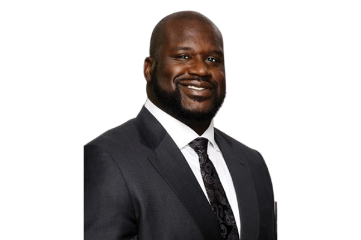

Big Diesel
Antrenor secund
Big Diesel, poreclit astfel datorită înălțimii sale impunătoare și experienței în baschet, este un antrenor secund dedicat. Atras de lumea baschetului din copilărie, a evoluat de la jucător la mentor. Cu tactici inovatoare și pasiune pentru dezvoltarea jucătorilor, el aduce o energie contagiante în echipă, contribuind la succesele remarcabile ale acesteia.